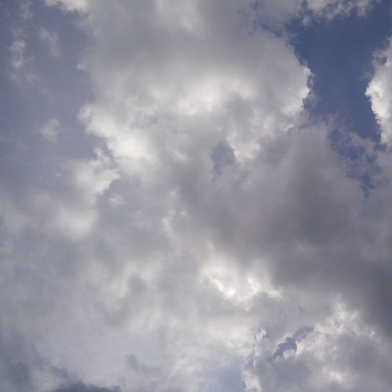
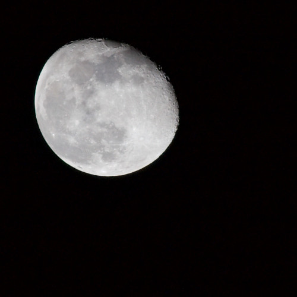

Time was composed for an art project also with the name "Time". The piece is meant to show the repetitive process of growth and decay as time passes. The music grow in parts, representing growth, and then loses these parts, represending decay. Time includes 7 different parts at its climax, all recorded and overdubbed on the cello.
The Woods of Winter
The Woods of Winter is an attempt to capture the atmosphere of nature during the winter. This includes the peacefulness and stillness of forests and the raging blizzards that nature throws at them.

When it Rains
My favorite thing in the world is to read a book when it is raining outside. It just so happened that I discovered this piece when I was doing just that; reading while it was raining. Because of this, the name, "When it Rains", seemed fitting. This was my attempt at minimalist music, inspired by my favour ite minimalist composer, Philip Glass. I start out this piece with a bit of tension with the raised 7th to build suspense, but then release this tension for the rest of the piece. My goal was to imitate my experience and share it with others.
From 2D to 3D
My main career aspiration is to compose for video games, mainly the ones that are experiential. Because of this, I wanted to gain as much composing experience as possible. It just so happens that my sister is studying video game design, so I offered to compose some pieces for her video game projects. This short piece was composed for one of those game projects in which the player can switch between the second and third dimension to solve puzzles. The main character is a super hero who is on an adventure. My goal was to match the style of the game and accentuate it.

The Moon
After taking many courses in theory, such as Rudiments and Harmony, I noticed that I was focusing too strongly on the technical side of composing. Everything, in my mind, had to fit harmonically and work perfectly in the composition. It was my goal in this piece to break that mold and create pieces of music that were more unnatural and uncomfortable to listen to to. In this piece, I used accidentals more often than in most of my compositions, I made phrases with odd numbers of bars and broke many other rules. The result was a stimulating work.